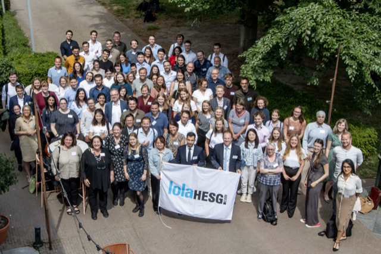
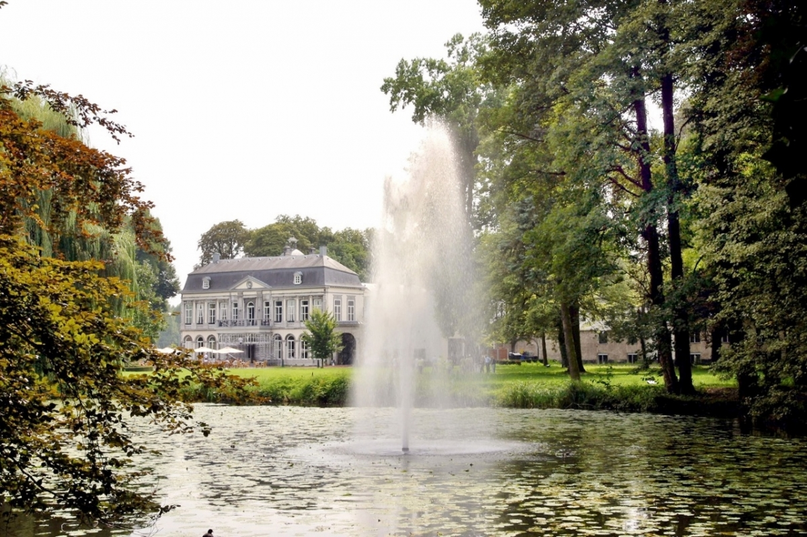

Engaging with the HTA community
![]()

Hello folks, it has been a while since I updated my posts but it has been a very busy period I am afraid. Enough with excuses let’s talk about the news!
First, last month I had the chance to participate to one of the most important HTA congress in the Netherlands, called lolaHEG, where researchers and workers in the field of health economics meet up to discuss the novel advances and research ideas in relation to HTA and health economics in general. This is a annual event here in the Netherlands that was created based on the inspiration taken from the UK HESG format, which I had already the pleasure the attend a few times in the past. This year was held here in Maastricht (very fortunate for me!) and attendance was over the roof, probably because of being the first one after corona.
What I really like of this format is that it is unlike any other congress I have been so for, in that participants are encouraged to read and present the work of someone else during the congress, which at first might seems a bit weird. But it works really well. Since you are forced to read the work that you did not do, it is much eaier to catch potential issues or ask critical questions that provide some nice and constructive feedback. Of course the authors of the papers have the chance to reply to the presentation of their work and to explain something that was missed, but the main point of this conference is to engage in reading the work of others rather than simply remembering your own work that probably nobody else is able to deeply understand. Thanks to this format then there is also the chance for the public to intervene in the discussion and ask questions on the basis of those moved by the presenter. I have participated in this type of congress since I was in the UK and I must say that its peculiarity makes it very suited for constructive discussions and developing new ideas.
This is what happened to me this year as well. I presented some new work on a statistical methodology review for HTA analsyes in the Netherlands in the past few years, see my pre-print version here, and I received lots of feedback from a varied audience who demonstrated interest in my work, from practitioners using these methods, to HTA directors, people working in regulatory agencies and scholars. I must seriously thank in particular a few people: Manuel Joore, Mohamed El Alili, and Geert Frederix. They all provided lots of feedback and suggested possible changes to my research work to correct some misinterpretation I had when starting working on this project by myself due to my ignorance of how things work here in the HTA regulatory framework in the Netherlands. I will definitely take their suggestions into account and I would even like to invite them to join my project to make sure I can adjust my work and avoid any further misinterpretation about this work which simply started as a standard review but which seems to be expanded towards a more general objective of recommendations and critical analysis of the current state of play for the HTA analyses in the Netherlands. I also had the chance to meet some amazing PhD students who came from all over the county to join this yearly appointment. The event only lasted two days but I had some real fun and met many new faces with whom I really hope I can still keep in contact. If this was not enough, the entire event was brilliantly organised by Maastricht University and in particular by the leader of the Health Service Research department Mikael hiligsmann and the recently appointed director of CAPHRI Silvia Evers who I really need to thank for setting up an amazing congress experience (beautiful location, delicious food, crazy party). I mean, look at the place of the conference, top!

The conference was also the perfect opportunity to enter in contact for the first time with many different researchers involved in HTA in the Netherlands and with whom I really hope I will be able to collaborate in the future. I have plenty of ideas of what and how to develop new stuff, now it only a problem of finding someone who shares my objectives and most importantly the time to put them into practice.
After my coming back from the conference the crude reality of previous open projects hit me quite hard but hopefully they will be done in the next month or so. In the meantime, I am preparing myself for a new adventure. Yes, I am going to attend and present my work at the EuHEA 2022 conference that will be held in Oslo this year. This is the first time I am attending this conference and I am eager to join another interesting conference and meet up new and old people working in my research field. And if there is another amazing party, that’s even better!